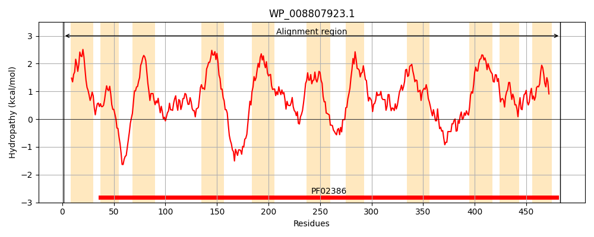
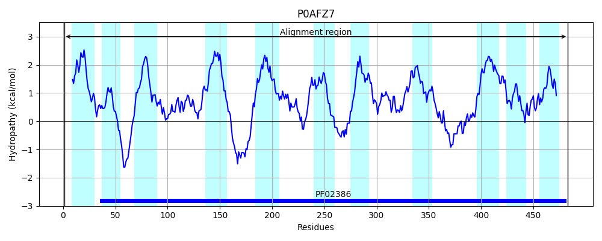
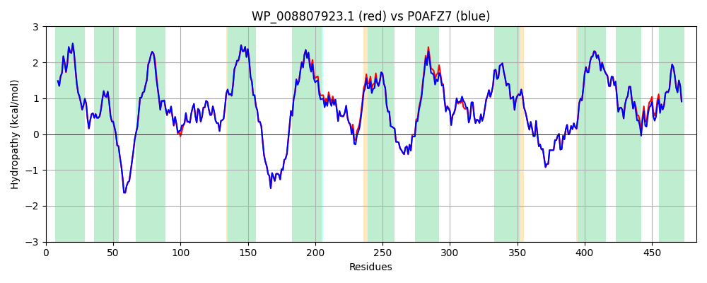

Hit Accession: P0AFZ7
Hit TCID: 2.A.38.1.1
Hit Description: gnl|BL_ORD_ID|8846 gnl|TC-DB|P0AFZ7|2.A.38.1.1 Trk system potassium uptake protein trkH - Escherichia coli.
Mach Len: 483
e:0.000000
Query TMS Count : 11
Hit TMS Count: 11
TMS-Overlap Score: 11.600000
Predicted Substrates:CHEBI:8345;potassium(1+)
BLAST Alignment:
Score: 2407 , Bit scores: 931 bits, E-value: 0.0e+00, Alignment length: 483, Percentage identity: 96
Query: 1 MHFRAITRIVGLLVILFSGTMIVPGLVALIYRDGAGRAFTQTFFVALAIGSMLWWPNRKQKGELKSREGFLIVVLFWTVLGSVGALPFIFAEQPNLTVTDAFFESFSGLTTTGATTLVGLDSLPHAILFYRQMLQWFGGMGIIVLAVAILPILGVGGMQLYRAEMPGPLKDNKMRPRIAETAKTLWLIYVLLTIACALALWFAGMPAFDAIGHSFATIAIGGFSTHDASVGYFNSPMINSIIAIFLLISGCNYGLHFSLLSGRSLKVYWRDPEFRMFIGVQLTLVIICTLVLWLHNVYGSVLTTLNQAFFQVVSMATTAGFTTDSIARWPLFLPVLLLCSAFIGGCAGSTGGGLKVIRILLLFKQGNRELKRLVHPNAVYSIKLGNRALPERILEAVWGFFSAYALVFIISMLAIIATGVDDFSAFASVVATLNNLGPGLGVVADNFATMNPVAKWILIANMLFGRLEVFTLLVLFTPTFWRE 483
MHFRAITRIVGLLVILFSGTMI+PGLVALIYRDGAGRAFTQTFFVALAIGSMLWWPNRK+KGELKSREGFLIVVLFWTVLGSVGALPFIF+E PNLT+TDAFFESFSGLTTTGATTLVGLDSLPHAILFYRQMLQWFGGMGIIVLAVAILPILGVGGMQLYRAEMPGPLKDNKMRPRIAETAKTLWLIYVLLT+ACALALWFAGM AFDAIGHSFATIAIGGFSTHDAS+GYF+SP IN+IIAIFLLISGCNYGLHFSLLSGRSLKVYWRDPEFRMFIGVQ TLV+ICTLVLW HNVY S L T+NQAFFQVVSMATTAGFTTDSIARWPLFLPVLLLCSAFIGGCAGSTGGGLKVIRILLLFKQGNRELKRLVHPNAVYSIKLGNRALPERILEAVWGFFSAYALVFI+SMLAIIATGVDDFSAFASVVATLNNLGPGLGVVADNF +MNPVAKWILIANMLFGRLEVFTLLVLFTPTFWRE
Sbjct: 1 MHFRAITRIVGLLVILFSGTMIIPGLVALIYRDGAGRAFTQTFFVALAIGSMLWWPNRKEKGELKSREGFLIVVLFWTVLGSVGALPFIFSESPNLTITDAFFESFSGLTTTGATTLVGLDSLPHAILFYRQMLQWFGGMGIIVLAVAILPILGVGGMQLYRAEMPGPLKDNKMRPRIAETAKTLWLIYVLLTVACALALWFAGMDAFDAIGHSFATIAIGGFSTHDASIGYFDSPTINTIIAIFLLISGCNYGLHFSLLSGRSLKVYWRDPEFRMFIGVQFTLVVICTLVLWFHNVYSSALMTINQAFFQVVSMATTAGFTTDSIARWPLFLPVLLLCSAFIGGCAGSTGGGLKVIRILLLFKQGNRELKRLVHPNAVYSIKLGNRALPERILEAVWGFFSAYALVFIVSMLAIIATGVDDFSAFASVVATLNNLGPGLGVVADNFTSMNPVAKWILIANMLFGRLEVFTLLVLFTPTFWRE 483 | Protein Hydropathy Plots: |
|---|
|  |  |
Pairwise Alignment-Hydropathy Plot:
|
|---|
|  |